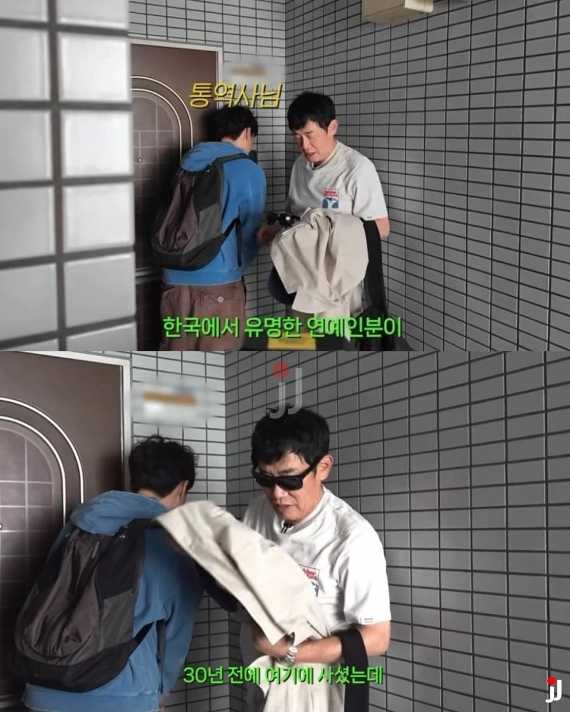
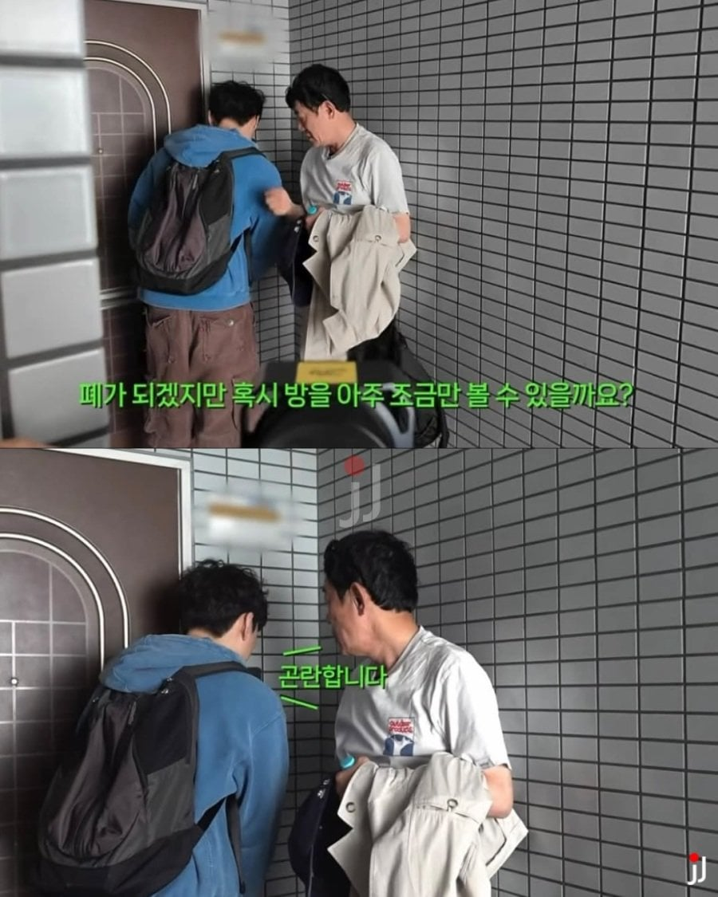
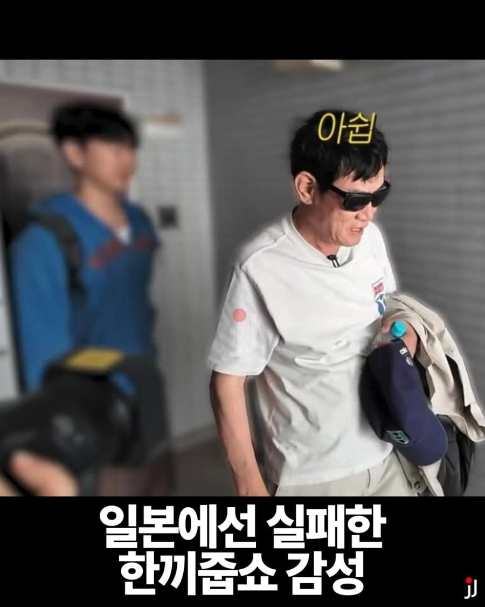
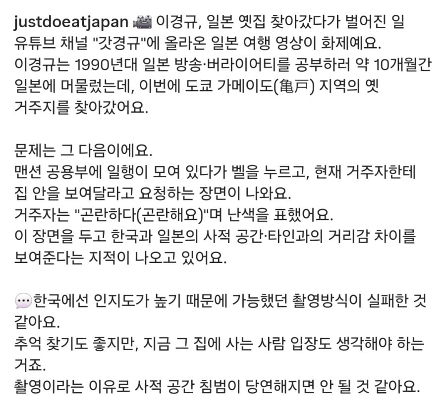

한국에서나 유명인이지 일본에서는 거의 모를텐데




한국에서나 유명인이지 일본에서는 거의 모를텐데
본문에 그래서 이경규 방송 접어야 할 큰 문제라고 써있음?
무리수를 했으니까 논란이 된거라고
무리수를 가지고 무리수라고 말도 못하냐? 논란이 될까봐?
일반인이 남의 집 찾아가서 나 예전에 여기 살았으니 문 열어달라고 하는건 무리수 맞아 병신아..
그리고 씨발아 내가 니보다 일본 문화에 대해서 알아도 훨씬 더 많이알아. 왜냐고? 일본에서 살았으니까 ㅅㅂ 저정도는 니가 말하는것처럼 논란도 무리수도 아니라고 개병신아. 저것보다 훨씬 더 가학적이고 무례한게 일본 예능판인데 뭔 씨바 30년전 집 방문해서 인터폰한걸로 논란을 일으키려고해 개병신년이. 뭐 비자라도 인증해줘?
아니 씨발아 너가 일본에서 살았다고 해서 너가 일본인이냐? 내가 미국에서 살면 내가 미국인이니?
'저것보다 훨씬 더 가학적이고 무례한게 일본 예능판인데'
일본 예능은 자기가 유명 방송국 유명 예능이라는걸 알리고 촬영 들어가는거 아냐
그냥 일반 개인이 카메라 들고 촬영하는거하고 그게 같냐 병신아
그래 니 인생 만물이 평생 불편하고 불만이길 바란다. 앞으로 사소한것 하나하나 인생 만물이 불편하길 바라.
https://tokyobreaknews.tistory.com/112
일본에서 타인의 집(가정집)을 방문하는 것은 매우 특별한 의미를 가지며, 사전에 조율되지 않은 방문은 큰 실례가 될 수 있습니다.
일본의 주거 문화는 개인의 사생활(프라이빗 공간)을 극도로 중시하기 때문에, 친한 친구나 가까운 사이라도 반드시 사전에 약속을 잡고 허락을 받은 경우에만 방문하는 것이 원칙입니다. 약속 없이 갑자기 찾아가거나 문 앞까지 들어서는 행위는 상대방에게 큰 결례이자 부담을 주게 됩니다.
일본인들은 생일 파티나 저녁 식사 조차도 집으로 초대해 치르는 경우가 드뭅니다. 대개 서민 주택은 공간이 협소하기도 하고, 자신의 사적인 공간인 집을 남에게 보여주는 것을 '누추한 모습을 보이는 것'이라 여겨 부담스러워하기 때문입니다. 부유한 경우라도 미국처럼 가볍게 홈파티를 여는 문화는 정착되어 있지 않으며, 집으로 초대한다는 것 자체가 '당신에게 엄청난 호의를 베풀고 깊은 신뢰를 가지고 있다'는 뜻으로 해석됩니다
https://www.yumetalktalk.com/cultures/46
https://brunch.co.kr/@master/52
일본인 집에 들어갈 때 외치는 "오쟈마시마스(お邪魔します)"의 사전적 의미를 분석한 브런치 스토리나 일본 문화 매체를 보면 흥미로운 해설이 있습니다. 여기서 '자마(邪魔)'는 불교에서 몸과 마음을 괴롭히는 '악마나 방해꾼'을 뜻합니다.
즉, 직역하면 "내가 이 집의 평화로운 공간을 방해하는 방해꾼(악마) 역할을 하겠습니다"라는 뜻이 됩니다. 가족들만의 사적인 공간에 내가 끼어들어 번거롭게 만든다는 미안함과 자신을 극도로 낮추는 겸양의 표현이 인사말에 그대로 녹아있는 셈입니다.
=========================================================
대체 일본에 얼마나 살았다고 일본인인척 하는데 일본에서 사전에 아무런 조율없이 방문해서 열어달라고 하는건 실례고 무리수야
제발 알지못하면 그냥 가만히 있어
현실에서 살아보지도 않고 인터넷 딸깍으로 한국 문화 배우는 넷우익과 같은 모습이구나 그래그래...
저 글 쓴 사람들 너보다 더 일본에서 오래 살고 일본 문화 오래 경험한 사람들이야
반박을 제대로 못하니까 갑자기 헛소리를 하고 있네
일반인이 사전없이 방문해서 문열어달라고 하면 "반갑습니다 잠시만요 청소도 좀 하고 같이 사는사람한테 물어볼게요" 라고 대답한다는데 대체 누가 그렇게 말을해 ㅅㅂ ㅋㅋㅋ
뭐 어쩌라는거임?? 그래서 거절했고 그냥 갔잖아. 그러니까 일본인은 저런 질문만 받아도 견딜수없는 폭력을 당한것과 같은 데미지를 입는 참피같은 애들이니까 이경규가 아주 큰 잘못을 했다는거??
ㄹㅇ 무작정 현관안까지 들어가서 카메라 들이밀고 얼굴찍은것도 아니고 인터폰으로 말만해도 죽이려드네 ㅋㅋㅋㅋ
무리수를 무리수라고 말했다고 그게 죽이는거냐? ㅋㅋㅋ
아니 그냥 무리수라고...
무리수니까 무리수라고 한거지 무리수라고 한게 뭐 방송 접으라고 한거야?
저 행동을 무리수라고 말도 못함?
문화 차이긴 하지만 예전에 살던집 가서 정중하게 초인종으로 물어보는게 뭐가 문제가 될게 있나?
물어보고 죄송합니다하면 저 영상처럼 바로 뒤돌면 되는거잖아
이경규가 무슨 NHK 수금원 무리하게 들어가게 해주세요 한것도 아니고
그리고 일본에도 한끼줍쇼는 아니지만 充電させてもらえませんか 라는 방송이 있는데
이것도 그냥 전기스쿠터 타다가 배터리 없으면 근처 민가나 가게 가서 충전 가능할까요? 라고 초인종 누르고
허락 받은뒤 집에 들어가서 충전될때까지 집주인 분이랑 수다 떠는데 이것도 그럼 작성자가 말하는데로 무리수의 방송이니?? 일본 방송인데??
너무 이건 무리수야 하고 억지쓰지말고 그냥 그러려니하고 넘어가라
充電させてもらえませんか 라는 방송은 자기가 방송국이라는거 알리고 이게 예능이라는거 알리고 촬영협조하는거잖아
이경규는 그냥 말그대로 일반인이 나 촬영하게 들여보내줘 라는거고
이경규가 지금 일본 방송국에서 유명 예능에 출연해서 문 열어달라고 한건가? 그게 아니니까 무리수인거지
일반인이 나 촬영하게 들여보내줘가 아니고 초인종 누르고 설명을 충분히 한 뒤 가능여부를 물어본거잖아
당장 뭐 나 저기 들어가게해줘 생때 부리는것도 아닌데 이 악물고 그렇게 까야돼??
나도 일본살지만 이경규 같은 케이스말고도 당장 최근에 우체통 이름만 보고 중국인인줄 알고 중국인 커뮤니티 있는데 오실래요? 이러는데 뭐
이경규는 일본에서는 일반인과 마찬가지고
방송국 동행이 아니니 그냥 일반인이 초인종 누르고 나 여기서 예전에 살았는데 촬영하게 들여보내줘 라고 하는것과 다를바 없는 상황인거잖아
막말로 내가 이경규 집에 초인종 누르고 정중히 나 예전에 여기 살았었는데 들어가서 방 봐도 되나요? 하면 이게 무리수가 아님?
'당장 최근에 우체통 이름만 보고 중국인인줄 알고 중국인 커뮤니티 있는데 오실래요?' 이건 중국인 커뮤니티 오라는거고 저 중국인 집에 들어가겠다라는 말이 아니잖아
저기서 우체통 이름 보고 초인종 누른뒤 나도 같은 동아시아인인데 집에 들어가도 되나요? 하면 무리수이고 실례인거고
아니 자꾸 일반인이 초인종 누르고 들어가게 해달라는 거랑 똑같다는데 그게 왜 무조건 무리수냐?
자기가 30년 전에 살던 집 찾아가서 예전에 여기 살았는데 잠깐 둘러봐도 되냐고 물어보는 게 그렇게 잘못된 행동임?
집주인이 싫다고 하면 그냥 가면 되는 거고 실제로도 그렇게 했잖아. 무작정 들어간 것도 아니고 거절했는데 계속 들여보내 달라고 진상 부린 것도 아닌데 대체 뭐가 문제라는 거임?
그리고 일본 방송국에서 촬영하면 괜찮고 개인이 촬영하면 무례하다는 건 또 무슨 논리냐?
방송국이 있으면 신뢰도가 다를 수는 있겠지. 근데 그게 초인종 누르고 허락 구하는 행동 자체가 무례하냐 아니냐를 결정하는 기준이 됨?
일본에서 사전 약속 없이 방문하는 걸 부담스러워할 수 있다는 건 나도 아는데, 그거랑 정중하게 물어보는 것조차 무례하다는 건 전혀 다른 얘기잖아.
니가 보기엔 무리수일 수 있지. 근데 그걸 마치 일본에서는 절대 해서는 안 되는 행동인 것처럼 일반화하면서 일본 문화 운운하는 게 웃기다는 거임 ㅋㅋㅋ
그리고 자꾸 이경규 집에 찾아가는 걸 예시로 드는데 니가 예전에 이경규 집에 살았고 정중하게 물어봤다가 거절당해서 그냥 돌아갔다면 그걸로도 똑같은거 아닌가?? 허락을 구하는거잖아
그리고 계속 너가 드는 예시가 뭔가 이상해.. 결국은 지금 초인종을 눌러서 허락을 구하는거가 무리수냐 아니냐잖아.
또한 내가 말한 방송도 똑같이 출연자가 혼자 초인종 눌러서 연예인입니다. 혹시 충전 가능할까요? 등 이런식으로 가서 허락을 구한 뒤에 방송 스탭이 들어가지 그 전까지는 스탭이 일절 개입하지 않는다.
방송국은 그 사람의 신원과 신분을 보장해줄수 있음
하지만 일반인이 와서 문 열어달라는건 그 사람의 신분이 보장안됨.
어느쪽이 더 무리수인지는 자명한거 아니냐?
방송이 와서 촬영 협조하는것하고 일반인이 와서 촬영 협조하는건 전혀 다른 문제야..
방송국 기자가 와서 매장 식당 내부 촬영하고 취재하겠다는것과
일반인이 매장 식당 내부 들어가 촬영하겠다고 하는것과 어느쪽이 더 무리수인지 그게 가늠이 안와?
일본 방송에서 연예인이 그렇게 물어보는건 뒤에 방송 카메라들도 있고 그 연예인이 존나 유명하니 가능한거지만
이경규가 일본에서는 일반인과 다를게 없잖아.
역으로 생각해도 갑자기 얼굴도 모르는 일본코미디언이 와서 카메라들고 집좀 보자하면 ㄴㄴ 함
담구고 싶어서 환장했네
근데 왜한거임 ㅋㅋ?
예전에 살았던 집이란 추억 때문에 찾아가본거
예전에 저거 한끼줍쇼 일본편에서도 했는데 그때는 재일교포를 상대로 하긴 했지만
그때는 저런 논란 없었는데 지금은 만들고 있는거 맞다
우리 입장에선 정중하게 물어보니 괜찮다고 생각할 수 있는데, 당하는 입장에선 질문 자체만으로도 불안하거나 불쾌할 수도 있다고 생각함
내가 가장 안전하다고 느낀 공간에 갑자기 외국인이 벨누르고 집에 들어가도 되냐고 물어본 거니까
영포티 아재의 데이트제안이 아무리 젠틀하더라도
당하는 입장에선 그 자체로도 괜히 불안해지도 불쾌해지는 것처럼
아무리 의도가 순수해도 질문 자체가 폭력이 될수도 있다 생각함
문화가 다르니깐 애초에 물어볼생각을 하고 그걸 기획했다는게 논란거리 아니여?
이슬람 소녀가 이슬람 문화존중해달라고 쓴건 욕하면서 저건 아무 문제 없다고 말하는건 뭐냐? ㅋㅋ
일본에서 살았었는데 저정도로 무례하다 논란이다 할정도 아님. 글쓴애가 논란을 만들고싶어하는게 같잖다는거임
https://tokyobreaknews.tistory.com/112
일본에서 타인의 집(가정집)을 방문하는 것은 매우 특별한 의미를 가지며, 사전에 조율되지 않은 방문은 큰 실례가 될 수 있습니다.
일본의 주거 문화는 개인의 사생활(프라이빗 공간)을 극도로 중시하기 때문에, 친한 친구나 가까운 사이라도 반드시 사전에 약속을 잡고 허락을 받은 경우에만 방문하는 것이 원칙입니다. 약속 없이 갑자기 찾아가거나 문 앞까지 들어서는 행위는 상대방에게 큰 결례이자 부담을 주게 됩니다.
일본인들은 생일 파티나 저녁 식사 조차도 집으로 초대해 치르는 경우가 드뭅니다. 대개 서민 주택은 공간이 협소하기도 하고, 자신의 사적인 공간인 집을 남에게 보여주는 것을 '누추한 모습을 보이는 것'이라 여겨 부담스러워하기 때문입니다. 부유한 경우라도 미국처럼 가볍게 홈파티를 여는 문화는 정착되어 있지 않으며, 집으로 초대한다는 것 자체가 '당신에게 엄청난 호의를 베풀고 깊은 신뢰를 가지고 있다'는 뜻으로 해석됩니다
https://www.yumetalktalk.com/cultures/46
https://brunch.co.kr/@master/52
일본인 집에 들어갈 때 외치는 "오쟈마시마스(お邪魔します)"의 사전적 의미를 분석한 브런치 스토리나 일본 문화 매체를 보면 흥미로운 해설이 있습니다. 여기서 '자마(邪魔)'는 불교에서 몸과 마음을 괴롭히는 '악마나 방해꾼'을 뜻합니다.
즉, 직역하면 "내가 이 집의 평화로운 공간을 방해하는 방해꾼(악마) 역할을 하겠습니다"라는 뜻이 됩니다. 가족들만의 사적인 공간에 내가 끼어들어 번거롭게 만든다는 미안함과 자신을 극도로 낮추는 겸양의 표현이 인사말에 그대로 녹아있는 셈입니다.
=========================================================
대체 일본에 얼마나 살았다고 일본인인척 하는데 일본에서 사전에 아무런 조율없이 방문해서 열어달라고 하는건 실례고 무리수야
제발 알지못하면 그냥 가만히 있어
그래그래 인터넷이 전부야 인터넷 세상이 진리야. 현실에서 살아본 내가 뭘 알겠어 인터넷하시는 분이 불편하시다는데. 아이고 죄송합니다. 2ch가서 넷우익들이랑 행복하게 사시길 바라요....
저 글 쓴 사람들 너보다 더 일본에서 오래 살고 일본 문화 오래 경험한 사람들이야
반박을 제대로 못하니까 갑자기 헛소리를 하고 있네
일반인이 사전없이 방문해서 문열어달라고 하면 "반갑습니다 잠시만요 청소도 좀 하고 같이 사는사람한테 물어볼게요" 라고 대답한다는데 대체 누가 그렇게 말을해 ㅅㅂ ㅋㅋㅋㅋㅋ 제발 망상에서 좀 나와
아이고 정신병자 제대로 건들였네 아이고아이고 ㅠㅠㅠ 세상 만물 논란 계속 만드시고..그 화이팅..! 인생이 매번 불편하시길 진심으로 응원합니다..!!!
이새끼 반박을 더이상 못하니 갑자기 정신병자인척 행동하네 ㅋㅋㅋ
하기야 일반인이 사전없이 방문해서 문열어달라고 하면 "반갑습니다 잠시만요 청소도 좀 하고 같이 사는사람한테 물어볼게요" 라고 대답한다는데서 정신병 있다는거 알아봤다
제발 병원가서 약 타먹고 빨리 완치하길 바랄께!!
뭐 베트남 어디 연애인이라고 하면서 문열어달라그럼 열어주겟나 누군지알고 열어줘
병신 와드
이제 물어보는 것 조차도 실례인 세상인가 싶기도하고
너무 세상이 차가워진 것 같다.
무례하가 들어가는거도 아니고 충분히 물어보고 안된다해서 돌아나온건데도 욕을 먹어야하는 세상이라니
일본은 물어보는거 자체도 실례임
https://brunch.co.kr/@master/52
일본에서 남의 집 방문 할때 인사말이 "오자마시마스(お邪魔します, おじゃまします)"
여기서 '자마(邪魔)'는 불교에서 몸과 마음을 괴롭히는 '악마나 방해꾼'을 뜻하는데. 즉, 직역하면 "내가 이 집의 평화로운 공간을 방해하는 방해꾼(악마) 역할을 하겠습니다"라는 뜻이 됨.
가족들만의 사적인 공간에 내가 끼어들어 번거롭게 만든다는 미안함과 자신을 극도로 낮추는 겸양의 표현이 인사말에 그대로 녹아있는 셈이고
서로 사전에 합의되어 초대받고 들어갈때도 이런 인사말을 쓰는데
아무런 합의없이 방문해서 들어가겠다고 하는건 큰 실례임
그건 일본에서나 통하는거고요 외지인이니까 충분히 실례한다했고 거절당했고 그래도 돌아나왔는데
일본에선 그게 실례니까 저새끼들 처 죽여야합니다는 다른문제지
실수했는가 -> O
문제인지 했는가 -> O
더이상 요구하지 않았는가 -> O
걍 논란만들고싶어서 안달난 사람같다
이게 니말대로 저런건 실례니까 하지말자 라는 정보글이라면 좋았을 것 같은데 솔직히 본문만 놓고보면 너 마침 잘걸렸다 로 보임
이경규가 그러니까 지금 일본가서 문두드린거지 한국가서 문두드린거야?
아무도 이경규 쳐죽여야 한다고 한적 없어
그냥 이경규가 무리수를 했고 실례를 했다라는거지
그것마저 부정하면 억쉴이지
실례가 아니라고 부정하는게 아님 실례인거 알고 저건 한국에서도 따지고보면 실례기때문에 그럼에도 불구하고
내말대로 저건 일본에선 특히나 더 큰 실례라고 니가 열심히 댓글로 달고있는 그 내용을 본문에 적었으면 좋았을 것 같은데
혐오글로 개드립 보내놓고 이제와서 댓글로 하나하나 저 행동은 존나 큰 실례가 맞다고 이악물고 답댓글 다는게 아쉬운거지
그러니까 댓글들도 다 아사리판 난 것 같음
내가 느낀것처럼 너 마침 잘 걸렸다 느낌의 글이거든 본문만보면 그리고 생각보다 많은 개드리퍼들이 그런 혐오글에 피로감을 느끼고있고
본문만 올리고 말지..
댓글로 이러는 거 X에서 페미들 하는 짓 보는 것 같음 ㅋㅋ
댓글창 씹창났군 드르륵 드르륵 "다음글"
한끼줍쇼 자체가 존나 별로였음
연예인 내세운 구걸이라 1분 이상을 본적이 없다
예전에 살던집이라 물어본거래잖아 억까충아 ㅋㅋ
일반인이 이경규 집에 들어와서 여기 예전에 내가 살던집인데 들어가도 돼요? 하면 그게 무리수가 아닐까? ㅋ
집주인 입장에서 일반인이 카메라 들고 와서 내가 예전에 여기 살았는데라고 해봤자 그게 진짜인지 아닌지 어떻게 알아
초인종누르고 문밖에서 물어보는 거 자체도 문제임?
글쓴이에게 나무라는 개붕이들은
어떠한 사유인지 내가 누군지 뭐때문에 집을 보고 싶은지 물어봤는데 이게 무슨 무리수냐 인거고
글쓴이는 예시를
일반인이 이경규 집에 들어와서 여기 예전에 내가 살던집인데 들어가도 돼요? 하면 그게 무리수가 아닐까?
라며 왜곡해서 그냥 냅다 집안에 들어가겠다 청년으로 만들며 은근슬쩍 논점 흐리고있으니
대화가 통할리가없음
그냥 여초식 기싸움하는중임 ㅋㅋㅋ
글쓴이는 일본 방송 집에따라가도될까요? 보면 발작 하겠네ㅋㅋ
본문 내용에 "논란"이라고 떡하니 적혀있는데 씨발련아 ㅋㅋㅋㅋㅋㅋㅋㅋ인터폰 한게 진짜 논란이라며 렉카질하고 난리칠일임?? 진짜 그렇게 생각함?? 니같은 애들이 난 그저 렉카일뿐.... 이러면서 세상에서 논란만들고 발빼는 제일 비겁한새끼임. 니같은 정신병자가 제일 문제라고 ㅇㅋ?